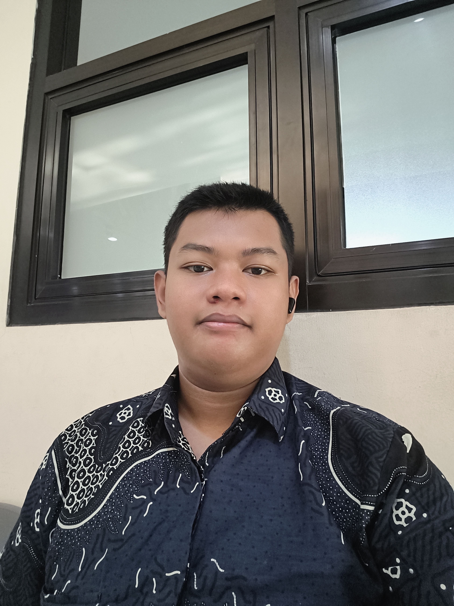

dompet kostOktober ↗
Total saldoRp 1.250.000Ringkasan bulan ini
PengeluaranDetail →
Dompet Kost
Aplikasi sederhana untuk mencatat pemasukan dan pengeluaran sehari-hari, melihat ringkasan keuangan, dan mengekspor catatan.
Mahasiswa Informatika yang sedang belajar membangun sesuatu lewat kode. Di sini aku menyimpan project, hal-hal yang sedang kupelajari, dan hal-hal kecil yang ingin kubagikan..

Start where you are. Use what you have. Do what you can.
Catatan kecil dari perjalanan belajarku.Aku mahasiswa Informatika di Universitas Pembangunan Nasional “Veteran” Jawa Timur. Saat ini aku sedang mengenal dunia pemrograman lebih dalam, mencoba ide-ide sederhana, dan belajar menyelesaikan masalah lewat teknologi.
Menurutku, project kecil pun tetap berarti kalau dari situ ada hal baru yang dipahami. Website ini jadi tempat untuk mendokumentasikan proses itu—termasuk hal yang belum sempurna.
Beberapa pencapaian yang menjadi bagian dari perjalanan belajarku.
Pernah masuk 10 besar Olimpiade OLIPS yang diselenggarakan oleh Universitas Pendidikan Indonesia (UPI), Bandung, saat masih SMP.
Prestasi · Tingkat Nasional (SMP)Beberapa ide yang kuubah jadi project. Sebagian masih terus dikembangkan—dan itu bagian dari prosesnya.
Aplikasi sederhana untuk mencatat pemasukan dan pengeluaran sehari-hari, melihat ringkasan keuangan, dan mengekspor catatan.
Jangan lupa selesaikan satu per satu.
Catatan digital untuk menyimpan ide, mengatur tugas, dan menandai deadline supaya hal-hal kecil nggak gampang terlewat.
Berbagai permainan yang dapat dijalankan melalui browser, cocok dimainkan bersama teman.
Tempat perkenalan diri dan dokumentasi project, dirancang ringan supaya nyaman dibuka lewat link bio Instagram.
Nggak harus menguasai semuanya sekaligus. Untuk sekarang, aku fokus membangun dasar yang kuat.
Melatih logika, memecah masalah, dan menyusun langkah sebelum menulis kode.
Belajar bikin website yang enak dipakai, cepat dibuka, dan tetap rapi di layar kecil.
Mengubah ide sehari-hari menjadi sesuatu yang bisa dicoba dan dipakai.
Membaca error, mencari solusi, dan memperbaiki hal-hal yang belum berjalan baik.
Terbuka untuk ngobrol soal project, belajar bareng, atau sekadar bertukar ide seputar teknologi.